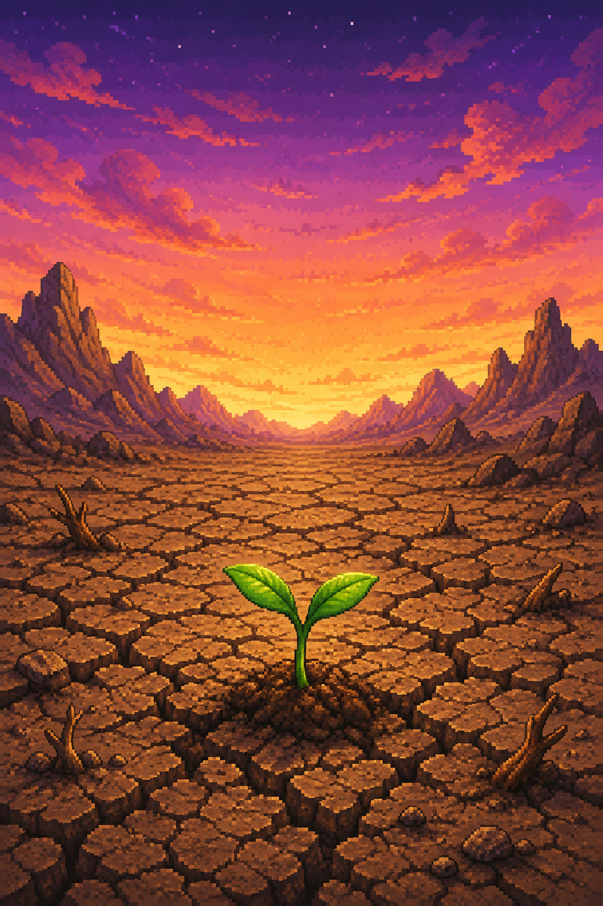
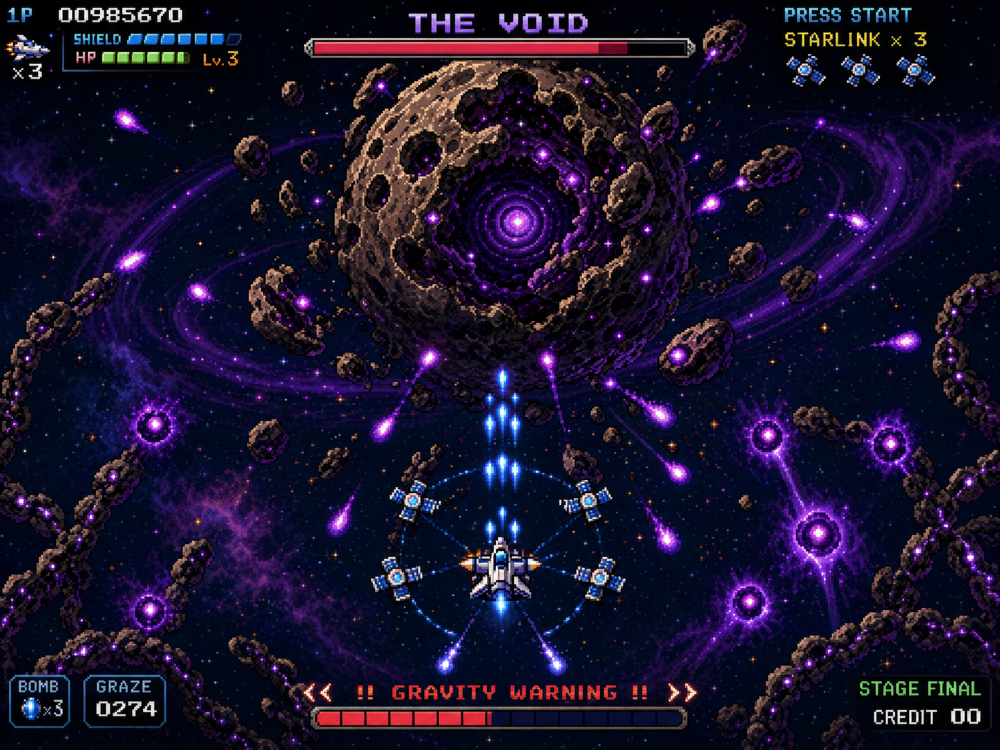
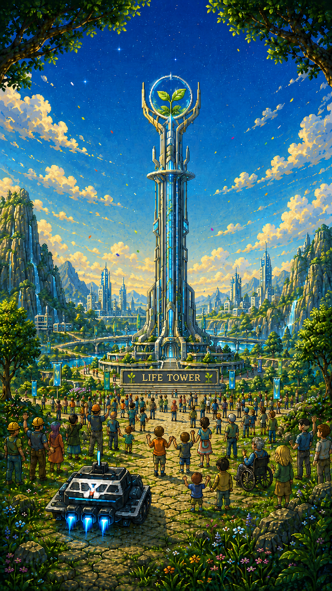
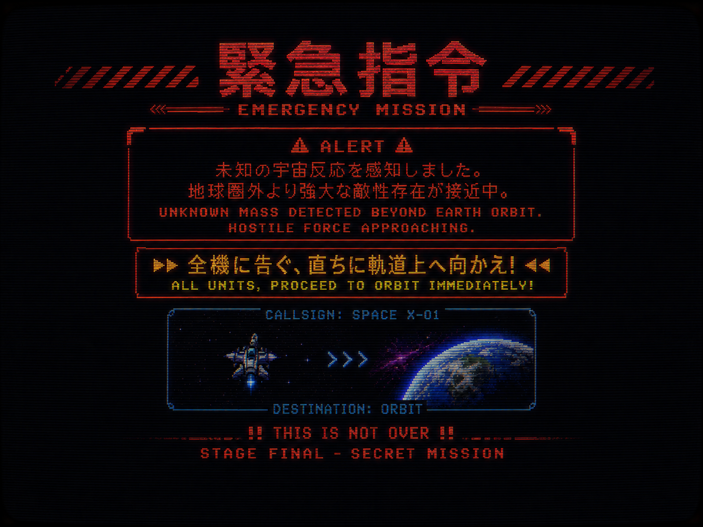
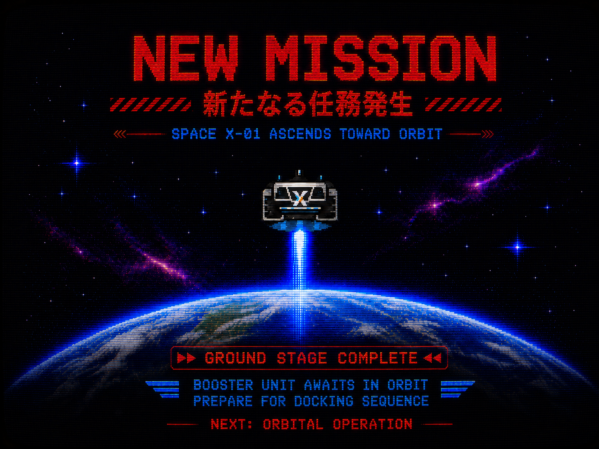
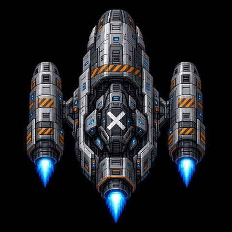

Grassroots Begin

スタート = ENTER
操作・アイテム説明
操作方法
- 「←」「→」（またはA/D）…移動
- 「スペース」（またはZ）…射撃（押しっぱなし）
アイテム
- ・種…緑化を進める ／ 知恵…コロニー建設
- ・シールド…耐久2 ／ 修復…被弾を1段階回復
- ・連射…約6秒 ／ 三連弾…約6秒
特殊効果
- ・放射能…自機が動かなくなる ／ 電磁波…自機が一時停止
- ※色が変わっている間は効果中
自機
- スペースX号 … 耐久2（3発でゲームオーバー）
ゲームスタート = ENTER・難易度は 1〜4 で切替
難易度: イージー（攻撃−30%）
1 E · 2 N · 3 H · 4 SH
草の根防衛ユニット X
ver.4.3 · 2.5D
浮遊メカで汚染を撃ち落とし、
種と知恵で世界を緑に変えよう。
- ←→ / AD … 移動
- Space / Z … 射撃
- 敵：光化学スモッグ · 廃プラPFAS · 病原体
- 🌱種 · 📘知恵 · ⚡速射 · ≡3点射撃 · 🛡シールド
- ≡3点 … 左・中央・右の3発（取得時に残像＋スパーク演出）
- 🛡 取得で耐久2回復 · 透明度2=20%濃い箱 / 1=80%薄く機体が見える
- 敵弾：スモッグ＝直進 · PFAS＝ジグザグ · 病原体＝小型キャラ弾
- WAVE4〜 放射能 · 電磁波 · ICBM · 稲妻 · コロニーICBM/落雷（知恵で再建）
- 射撃不可＝赤化 / 移動停止＝紫化（直近優先）· P ポーズ
- 難易度：1E / 2N / 3H / 4スーパーハード
- 稲妻：ピカ＋地上の黄色い線に当たり判定 · バリバリ音
- 敵強化：弾速+5%・移動+1%・弾数+2% · 残り10体で強化
- WAVE 1〜8 クリアで防衛成功
難易度: イージー（攻撃−30%）
1 イージー（−30%） 2 ノーマル 3 ハード（＋10%） 4 スーパーハード（＋50%・謎攻撃増）
防衛成功
←→ / AD 選択 · Enter 決定

鋭意制作中！
To Be Continued
Enter でタイトルへ

Enter でタイトルへ

軌道へ発進！


DOCKING SEQUENCE